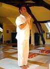
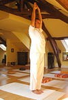
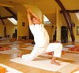
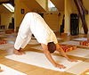
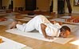
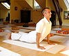
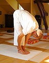

| Step | Asana | Breath | Images | Chakra | Position | Bija |
| 1 | Pranamasana | Exhale |  | Anahata | Heart | om hram |
| 2 | Hasta Uttanasana | Inhale |  | Vishuddhi | Throat | om hrim |
| 3 | Hastapaadasana | Exhale | |
Swadhisthana | Sacrum | om hrum |
| 4 | Aekpaadprasarnaasana | Inhale |  | Ajna | Third eye | om hraim |
| 5 | Adho Mukha Svanasana/parvatasana | Exhale |  | Vishuddhi | Throat | om hraum |
| 6 | Ashtanga Namaskara | Suspend |  | Manipura | Solar plexus | om hrah |
| 7 | Bhujangasana | Inhale |  | Swadhisthana | Sacrum | om hram |
| 8 | Adho Mukha Svanasana | Exhale | Vishuddhi | Throat | om hrim | |
| 9 | Ashwa Sanchalanasana | Inhale | Ajna | Third eye | om hrum | |
| 10 | Uttanasana | Exhale |  | Swadhisthana | Sacrum | om hraim |
| 11 | Hasta Uttanasana | Inhale | |
Vishuddhi | Throat | om hraum |
| 12 | Pranamasana | Exhale | Anahata | Heart | om hrah |